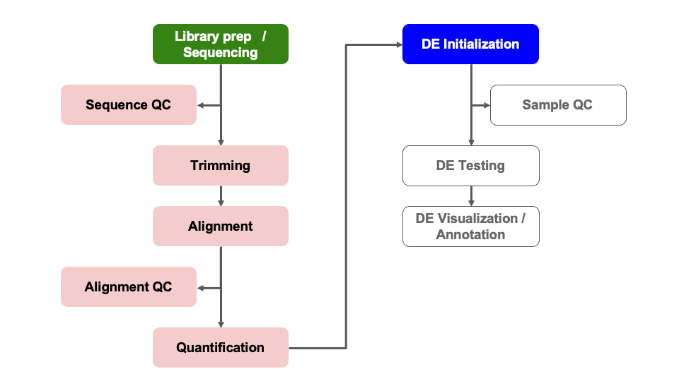

Objectives
- Discuss count normalizations
- Execute model fitting for differential expression comparisons
Differential Expression Workflow
Here we will proceed with count normalizations and fit our DESeq2
model.

Count normalizations
Since counts of mapped reads for each gene is proportional to the
expression of RNA in addition to many “uninteresting” other factors,
normalization is the process of scaling raw count values to account for
the “uninteresting” factors and ensure expression levels are more
comparable.
Normalization goals
Two common factors that need to be accounted for during normalization
are sequencing depth and gene length.
Common normalization approaches (such as FPKM, RPKM, CPM, TPM, etc.)
account for one or both of these factors.
- Sequencing depth normalization is necessary to
account for the proportion of reads per gene expected for more deeply
sequenced samples (like in pink below) versus a less deeply sequenced
sample (like in green below).
- Gene length normalization may also be necessary if
comparing between different genes, since genes of different lengths have
different probabilities of generating fragments that end up in the
library.
Note: The above figure was originally from a HBC
tutorial that also includes a detailed comparison of different
normalization (CPM, TPM, FPKM) approaches and their best uses.
Check-in: Questions about normalizations?
DESeq2 normalizations
DESeq2 has an internal
normalization process that accounts for RNA
composition. A few highly differentially expressed genes,
differences in the number of genes expressed between samples, or
contamination are not accounted for by depth or gene length
normalization methods. Accounting for RNA composition is particularly
important for differential expression analyses, regardless of the tool
used.
For data exploration and visualizations, it is helpful to generate an
object of independently normalized counts. We will use the rlog
transformation from DESeq2 that accounts for sequencing depth for
each sample and RNA composition for the downstream quality control
visualizations.
The rlog transformation produces log2 scaled data that has also been
normalized to overall library size as well as variance across genes at
different mean expression levels. For larger numbers of samples, there
is an alternative transformation method, vst
that can be used instead for count normalizations.
The command to generate the normalized count object has a few parts,
including dds as an input and providing a value to the
option blind. For our purposes, we set
blind = TRUE because we want to compare samples in
downstream QC plots in an unbiased manner.
rld = rlog(dds, blind = TRUE)
Note: We might see a message that our data did not fit the default
‘parametric’ dispersion model so a local regression was substituted. If
we had more time, we might look at a dispersion plot with the
plotDispEsts(dds) function, but as this bioconductor
thread discusses, other visualizations of our data might be more
helpful and/or easier to interpret.
Next, we’ll look at the results of the transformation by extracting
the values with the assay() function.
head(assay(rld), 2)
SRR7777895 SRR7777896 SRR7777897 SRR7777898 SRR7777899 SRR7777900
ENSMUSG00000000001 10.51481 10.36671 10.41946 10.84037 10.41045 10.57877
ENSMUSG00000000028 10.60446 10.73451 10.73503 10.68271 10.82094 10.99100
Looking at the rld values, we can see that they are now in log scale.
Since we set blind=TRUE, the transformation is blind to the
sample information we specified in the design formula. The normalized
counts are helpful for visualization methods during expression-level
quality assessment but aren’t used in the model
fitting.
DESeq2 Model Fitting
Next, we’ll fit our standard model using the DESeq
function and take a look at the objects we generate. This command
applies the model to our data, using the sample information supplied
when generating the dds object so it takes some time to
run.
dds = DESeq(dds)
dds
class: DESeqDataSet
dim: 16249 6
metadata(1): version
assays(4): counts mu H cooks
rownames(16249): ENSMUSG00000000001 ENSMUSG00000000028 ... ENSMUSG00000118651 ENSMUSG00000118653
rowData names(22): baseMean baseVar ... deviance maxCooks
colnames(6): SRR7777895 SRR7777896 ... SRR7777899 SRR7777900
colData names(3): genotype condition sizeFactor
Notice that there is now more information in the
DESeqDataSet object than there was prior to our
normalization. There is information about the model fit and about the
library size normalization. DESeq2 will use this information when we
perform the test for differential expression.
The DESeq() function is actually doing three things
automatically for us. It calculates:
- The size factors to normalize for library size with
estimateSizeFactors(dds),
- Dispersion estimates to shrink the dispersions with
estimateDispersions(dds), and
- The Wald test statistics with
nbinomWaldTest(dds).
The resultsNames() function returns the names of hte
estimaed effects of the model.
resultsNames(dds)
[1] "Intercept" "condition_plus_vs_minus"
The results include the single comparison representing the two levels
of condition. If there were more levels in the
condition column, there would be more results listed here
because DESeq2 would implicitly compare all other levels to the
reference level.
Checkpoint: If you see the same results when you
execute resultsNames(dds), please indicate with the green
‘yes’ button. Otherwise, please use the red ‘x’ button to get help
before the break
Optional content
Click for fitting a model that includes a covariate
If you executed the commands in the additional content section from
Module 07, you can fit a separate DESeq2 model for the batch
example.
dds_batch = DESeq(dds_batch)
estimating size factors
estimating dispersions
gene-wise dispersion estimates
mean-dispersion relationship
final dispersion estimates
fitting model and testing
resultsNames(dds_batch)
[1] "Intercept" "batch_Day2_vs_Day1" "batch_Day3_vs_Day1" "condition_plus_vs_minus"
If you run through the optional exercises, you can explore the impact of
adding a covariate by substituting dds_patient for
dds and re-running those commands since both DESeq2 objects
have their data organized in the same way.
Summary
In this section, we:
- Learned about count normalizations and uses
- Generated a normalized count table
- Fit two DESeq2 models for our data
- Saw the impact of including a covariate in our model
Sources
Training resources used to develop materials
These materials have been adapted and extended from materials listed
above. These are open access materials distributed under the terms of
the Creative
Commons Attribution license (CC BY 4.0), which permits unrestricted
use, distribution, and reproduction in any medium, provided the original
author and source are credited.
LS0tCnRpdGxlOiAiTW9kdWxlIDA4OiBOb3JtYWxpemF0aW9uIGFuZCBNb2RlbCBGaXR0aW5nIgphdXRob3I6ICJVTSBCaW9pbmZvcm1hdGljcyBDb3JlIgpkYXRlOiAiYHIgU3lzLkRhdGUoKWAiCm91dHB1dDoKICAgICAgICBodG1sX2RvY3VtZW50OgogICAgICAgICAgICBpbmNsdWRlczoKICAgICAgICAgICAgICAgIGluX2hlYWRlcjogaGVhZGVyLmh0bWwKICAgICAgICAgICAgdGhlbWU6IHBhcGVyCiAgICAgICAgICAgIHRvYzogdHJ1ZQogICAgICAgICAgICB0b2NfZGVwdGg6IDQKICAgICAgICAgICAgdG9jX2Zsb2F0OiB0cnVlCiAgICAgICAgICAgIG51bWJlcl9zZWN0aW9uczogZmFsc2UKICAgICAgICAgICAgZmlnX2NhcHRpb246IHRydWUKICAgICAgICAgICAgbWFya2Rvd246IEdGTQogICAgICAgICAgICBjb2RlX2Rvd25sb2FkOiB0cnVlCi0tLQoKPHN0eWxlIHR5cGU9InRleHQvY3NzIj4KYm9keSwgdGQgewogICBmb250LXNpemU6IDE4cHg7Cn0KY29kZS5yewogIGZvbnQtc2l6ZTogMTJweDsKfQpwcmUgewogIGZvbnQtc2l6ZTogMTJweAp9Cjwvc3R5bGU+CgpgYGB7ciwgaW5jbHVkZSA9IEZBTFNFfQpzb3VyY2UoIi4uL2Jpbi9jaHVuay1vcHRpb25zLlIiKQprbml0cl9maWdfcGF0aCgiMDgtIikKYGBgCgo+ICMgT2JqZWN0aXZlcyB7LnVubGlzdGVkIC51bm51bWJlcmVkfQo+ICogRGlzY3VzcyBjb3VudCBub3JtYWxpemF0aW9ucwo+ICogRXhlY3V0ZSBtb2RlbCBmaXR0aW5nIGZvciBkaWZmZXJlbnRpYWwgZXhwcmVzc2lvbiBjb21wYXJpc29ucwoKYGBge3IgTG9hZFJ1bm5pbmdEYXRhLCBldmFsPVRSVUUsIGVjaG89RkFMU0UsIG1lc3NhZ2U9RkFMU0UsIHdhcm5pbmc9RkFMU0V9CmxpYnJhcnkoREVTZXEyKQojIGxvYWQoInJkYXRhL1J1bm5pbmdEYXRhLlJEYXRhIikKYGBgCgojIERpZmZlcmVudGlhbCBFeHByZXNzaW9uIFdvcmtmbG93IHsudW5saXN0ZWQgLnVubnVtYmVyZWR9CgpIZXJlIHdlIHdpbGwgcHJvY2VlZCB3aXRoIGNvdW50IG5vcm1hbGl6YXRpb25zIGFuZCBmaXQgb3VyIERFU2VxMiBtb2RlbC4KCiFbXSguL2ltYWdlcy93YXlmaW5kZXIvd2F5ZmluZGVyLTA4LnBuZyl7d2lkdGg9NzUlfQoKLS0tCgojIENvdW50IG5vcm1hbGl6YXRpb25zCgpTaW5jZSBjb3VudHMgb2YgbWFwcGVkIHJlYWRzIGZvciBlYWNoIGdlbmUgaXMgcHJvcG9ydGlvbmFsIHRvIHRoZSBleHByZXNzaW9uIG9mIFJOQSBpbiBhZGRpdGlvbiB0byBtYW55IOKAnHVuaW50ZXJlc3RpbmfigJ0gb3RoZXIgZmFjdG9ycywgbm9ybWFsaXphdGlvbiBpcyB0aGUgcHJvY2VzcyBvZiBzY2FsaW5nIHJhdyBjb3VudCB2YWx1ZXMgdG8gYWNjb3VudCBmb3IgdGhlIOKAnHVuaW50ZXJlc3RpbmfigJ0gZmFjdG9ycyBhbmQgZW5zdXJlIGV4cHJlc3Npb24gbGV2ZWxzIGFyZSBtb3JlIGNvbXBhcmFibGUuCgojIyBOb3JtYWxpemF0aW9uIGdvYWxzCgpUd28gY29tbW9uIGZhY3RvcnMgdGhhdCBuZWVkIHRvIGJlIGFjY291bnRlZCBmb3IgZHVyaW5nIG5vcm1hbGl6YXRpb24gYXJlICoqc2VxdWVuY2luZyBkZXB0aCoqIGFuZCAqKmdlbmUgbGVuZ3RoKiouIENvbW1vbiBub3JtYWxpemF0aW9uIGFwcHJvYWNoZXMgKHN1Y2ggYXMgRlBLTSwgUlBLTSwgQ1BNLCBUUE0sIGV0Yy4pIGFjY291bnQgZm9yIG9uZSBvciBib3RoIG9mIHRoZXNlIGZhY3RvcnMuCgoqICoqU2VxdWVuY2luZyBkZXB0aCoqIG5vcm1hbGl6YXRpb24gaXMgbmVjZXNzYXJ5IHRvIGFjY291bnQgZm9yIHRoZSBwcm9wb3J0aW9uIG9mIHJlYWRzIHBlciBnZW5lIGV4cGVjdGVkIGZvciBtb3JlIGRlZXBseSBzZXF1ZW5jZWQgc2FtcGxlcyAobGlrZSBpbiBwaW5rIGJlbG93KSB2ZXJzdXMgYSBsZXNzIGRlZXBseSBzZXF1ZW5jZWQgc2FtcGxlIChsaWtlIGluIGdyZWVuIGJlbG93KS4KCiFbKk5vdGUgdGhhdCBlYWNoIHBpbmsgb3IgZ3JlZW4gcmVjdGFuZ2xlIHJlcHJlc2VudHMgYW4gYWxpZ25lZCByZWFkLCB3aXRoIHJlYWRzIHNwYW5uaW5nIGFuIGludHJvbiBjb25uZWN0ZWQgYnkgYSBkYXNoZWQgbGluZS4gRmlndXJlIGZyb20gW0hCQyAgdHJhaW5pbmcgbWF0ZXJpYWxzXShodHRwczovL2hiY3RyYWluaW5nLmdpdGh1Yi5pby9ER0Vfd29ya3Nob3AvbGVzc29ucy8wMl9ER0VfY291bnRfbm9ybWFsaXphdGlvbi5odG1sKSpdKC4vaW1hZ2VzL25vcm1hbGl6YXRpb25fbWV0aG9kc19kZXB0aC5wbmcpCgoqICoqR2VuZSBsZW5ndGgqKiBub3JtYWxpemF0aW9uIG1heSBhbHNvIGJlIG5lY2Vzc2FyeSBpZiBjb21wYXJpbmcgYmV0d2VlbiBkaWZmZXJlbnQgZ2VuZXMsIHNpbmNlIGdlbmVzIG9mIGRpZmZlcmVudCBsZW5ndGhzIGhhdmUgZGlmZmVyZW50IHByb2JhYmlsaXRpZXMgb2YgZ2VuZXJhdGluZyBmcmFnbWVudHMgdGhhdCBlbmQgdXAgaW4gdGhlIGxpYnJhcnkuCgo+ICoqTm90ZSoqOiBUaGUgYWJvdmUgZmlndXJlIHdhcyBvcmlnaW5hbGx5IGZyb20gYSBbSEJDICB0dXRvcmlhbF0oaHR0cHM6Ly9oYmN0cmFpbmluZy5naXRodWIuaW8vREdFX3dvcmtzaG9wL2xlc3NvbnMvMDJfREdFX2NvdW50X25vcm1hbGl6YXRpb24uaHRtbCkgdGhhdCBhbHNvIGluY2x1ZGVzIGEgZGV0YWlsZWQgY29tcGFyaXNvbiBvZiBkaWZmZXJlbnQgbm9ybWFsaXphdGlvbiAoQ1BNLCBUUE0sIEZQS00pIGFwcHJvYWNoZXMgYW5kIHRoZWlyIGJlc3QgdXNlcy4KCioqQ2hlY2staW46IFF1ZXN0aW9ucyBhYm91dCBub3JtYWxpemF0aW9ucz8qKgoKIyMgREVTZXEyIG5vcm1hbGl6YXRpb25zCgpERVNlcTIgaGFzIGFuIFtpbnRlcm5hbCBub3JtYWxpemF0aW9uIHByb2Nlc3NdKGh0dHBzOi8vZ2Vub21lYmlvbG9neS5iaW9tZWRjZW50cmFsLmNvbS9hcnRpY2xlcy8xMC4xMTg2L2diLTIwMTAtMTEtMTAtcjEwNikgdGhhdCBhY2NvdW50cyBmb3IgKipSTkEgY29tcG9zaXRpb24qKi4gQSBmZXcgaGlnaGx5IGRpZmZlcmVudGlhbGx5IGV4cHJlc3NlZCBnZW5lcywgZGlmZmVyZW5jZXMgaW4gdGhlIG51bWJlciBvZiBnZW5lcyBleHByZXNzZWQgYmV0d2VlbiBzYW1wbGVzLCBvciBjb250YW1pbmF0aW9uIGFyZSBub3QgYWNjb3VudGVkIGZvciBieSBkZXB0aCBvciBnZW5lIGxlbmd0aCBub3JtYWxpemF0aW9uIG1ldGhvZHMuIEFjY291bnRpbmcgZm9yIFJOQSBjb21wb3NpdGlvbiBpcyBwYXJ0aWN1bGFybHkgaW1wb3J0YW50IGZvciBkaWZmZXJlbnRpYWwgZXhwcmVzc2lvbiBhbmFseXNlcywgcmVnYXJkbGVzcyBvZiB0aGUgdG9vbCB1c2VkLgoKRm9yIGRhdGEgZXhwbG9yYXRpb24gYW5kIHZpc3VhbGl6YXRpb25zLCBpdCBpcyBoZWxwZnVsIHRvIGdlbmVyYXRlIGFuIG9iamVjdCBvZiBpbmRlcGVuZGVudGx5IG5vcm1hbGl6ZWQgY291bnRzLiBXZSB3aWxsIHVzZSB0aGUgW3Jsb2cgdHJhbnNmb3JtYXRpb25dKGh0dHA6Ly9iaW9jb25kdWN0b3Iub3JnL3BhY2thZ2VzL2RldmVsL2Jpb2MvdmlnbmV0dGVzL0RFU2VxMi9pbnN0L2RvYy9ERVNlcTIuaHRtbCNjb3VudC1kYXRhLXRyYW5zZm9ybWF0aW9ucykgZnJvbSBERVNlcTIgdGhhdCBhY2NvdW50cyBmb3Igc2VxdWVuY2luZyBkZXB0aCBmb3IgZWFjaCBzYW1wbGUgYW5kIFJOQSBjb21wb3NpdGlvbiBmb3IgdGhlIGRvd25zdHJlYW0gcXVhbGl0eSBjb250cm9sIHZpc3VhbGl6YXRpb25zLgoKVGhlIHJsb2cgdHJhbnNmb3JtYXRpb24gcHJvZHVjZXMgbG9nMiBzY2FsZWQgZGF0YSB0aGF0IGhhcyBhbHNvIGJlZW4gbm9ybWFsaXplZCB0byBvdmVyYWxsIGxpYnJhcnkgc2l6ZSBhcyB3ZWxsIGFzIHZhcmlhbmNlIGFjcm9zcyBnZW5lcyBhdCBkaWZmZXJlbnQgbWVhbiBleHByZXNzaW9uIGxldmVscy4gRm9yIGxhcmdlciBudW1iZXJzIG9mIHNhbXBsZXMsIHRoZXJlIGlzIGFuIGFsdGVybmF0aXZlIHRyYW5zZm9ybWF0aW9uIG1ldGhvZCwgW3ZzdF0oaHR0cDovL3d3dy5iaW9jb25kdWN0b3Iub3JnL3BhY2thZ2VzL3JlbGVhc2UvYmlvYy92aWduZXR0ZXMvREVTZXEyL2luc3QvZG9jL0RFU2VxMi5odG1sI2NvdW50LWRhdGEtdHJhbnNmb3JtYXRpb25zKSB0aGF0IGNhbiBiZSB1c2VkIGluc3RlYWQgZm9yIGNvdW50IG5vcm1hbGl6YXRpb25zLgoKVGhlIGNvbW1hbmQgdG8gZ2VuZXJhdGUgdGhlIG5vcm1hbGl6ZWQgY291bnQgb2JqZWN0IGhhcyBhIGZldyBwYXJ0cywgaW5jbHVkaW5nIGBkZHNgIGFzIGFuIGlucHV0IGFuZCBwcm92aWRpbmcgYSB2YWx1ZSB0byB0aGUgb3B0aW9uIGBibGluZGAuIEZvciBvdXIgcHVycG9zZXMsIHdlIHNldCBgYmxpbmQgPSBUUlVFYCBiZWNhdXNlIHdlIHdhbnQgdG8gY29tcGFyZSBzYW1wbGVzIGluIGRvd25zdHJlYW0gUUMgcGxvdHMgaW4gYW4gdW5iaWFzZWQgbWFubmVyLgoKYGBge3IgQ291bnROb3JtfQpybGQgPSBybG9nKGRkcywgYmxpbmQgPSBUUlVFKQpgYGAKCk5vdGU6IFdlIG1pZ2h0IHNlZSBhIG1lc3NhZ2UgdGhhdCBvdXIgZGF0YSBkaWQgbm90IGZpdCB0aGUgZGVmYXVsdCAncGFyYW1ldHJpYycgZGlzcGVyc2lvbiBtb2RlbCBzbyBhIGxvY2FsIHJlZ3Jlc3Npb24gd2FzIHN1YnN0aXR1dGVkLiBJZiB3ZSBoYWQgbW9yZSB0aW1lLCB3ZSBtaWdodCBsb29rIGF0IGEgZGlzcGVyc2lvbiBwbG90IHdpdGggdGhlIGBwbG90RGlzcEVzdHMoZGRzKWAgZnVuY3Rpb24sIGJ1dCBhcyBbdGhpcyBiaW9jb25kdWN0b3IgdGhyZWFkXShodHRwczovL3N1cHBvcnQuYmlvY29uZHVjdG9yLm9yZy9wLzEwNzkzNy8pIGRpc2N1c3Nlcywgb3RoZXIgdmlzdWFsaXphdGlvbnMgb2Ygb3VyIGRhdGEgbWlnaHQgYmUgbW9yZSBoZWxwZnVsIGFuZC9vciBlYXNpZXIgdG8gaW50ZXJwcmV0LgoKTmV4dCwgd2UnbGwgbG9vayBhdCB0aGUgcmVzdWx0cyBvZiB0aGUgdHJhbnNmb3JtYXRpb24gYnkgZXh0cmFjdGluZyB0aGUgdmFsdWVzIHdpdGggdGhlIGBhc3NheSgpYCBmdW5jdGlvbi4KCmBgYHtyIENvdW50Tm9ybUNoZWNrfQpoZWFkKGFzc2F5KHJsZCksIDIpCmBgYAoKTG9va2luZyBhdCB0aGUgcmxkIHZhbHVlcywgd2UgY2FuIHNlZSB0aGF0IHRoZXkgYXJlIG5vdyBpbiBsb2cgc2NhbGUuIFNpbmNlIHdlIHNldCBgYmxpbmQ9VFJVRWAsIHRoZSB0cmFuc2Zvcm1hdGlvbiBpcyBibGluZCB0byB0aGUgc2FtcGxlIGluZm9ybWF0aW9uIHdlIHNwZWNpZmllZCBpbiB0aGUgZGVzaWduIGZvcm11bGEuIFRoZSBub3JtYWxpemVkIGNvdW50cyBhcmUgaGVscGZ1bCBmb3IgdmlzdWFsaXphdGlvbiBtZXRob2RzIGR1cmluZyBleHByZXNzaW9uLWxldmVsIHF1YWxpdHkgYXNzZXNzbWVudCBidXQgKiphcmVuJ3QgdXNlZCBpbiB0aGUgbW9kZWwgZml0dGluZyoqLgoKIyBERVNlcTIgTW9kZWwgRml0dGluZwoKTmV4dCwgd2UnbGwgZml0IG91ciBzdGFuZGFyZCBtb2RlbCB1c2luZyB0aGUgYERFU2VxYCBmdW5jdGlvbiBhbmQgdGFrZSBhIGxvb2sgYXQgdGhlIG9iamVjdHMgd2UgZ2VuZXJhdGUuIFRoaXMgY29tbWFuZCBhcHBsaWVzIHRoZSBtb2RlbCB0byBvdXIgZGF0YSwgdXNpbmcgdGhlIHNhbXBsZSBpbmZvcm1hdGlvbiBzdXBwbGllZCB3aGVuIGdlbmVyYXRpbmcgdGhlIGBkZHNgIG9iamVjdCBzbyBpdCB0YWtlcyBzb21lIHRpbWUgdG8gcnVuLgoKYGBge3IgRml0TW9kZWxTdGFuZGFyZCwgbWVzc2FnZT1GQUxTRX0KZGRzID0gREVTZXEoZGRzKQpkZHMKYGBgCgpOb3RpY2UgdGhhdCB0aGVyZSBpcyBub3cgbW9yZSBpbmZvcm1hdGlvbiBpbiB0aGUgYERFU2VxRGF0YVNldGAgb2JqZWN0IHRoYW4gdGhlcmUgd2FzIHByaW9yIHRvIG91ciBub3JtYWxpemF0aW9uLiBUaGVyZSBpcyBpbmZvcm1hdGlvbiBhYm91dCB0aGUgbW9kZWwgZml0IGFuZCBhYm91dCB0aGUgbGlicmFyeSBzaXplIG5vcm1hbGl6YXRpb24uIERFU2VxMiB3aWxsIHVzZSB0aGlzIGluZm9ybWF0aW9uIHdoZW4gd2UgcGVyZm9ybSB0aGUgdGVzdCBmb3IgZGlmZmVyZW50aWFsIGV4cHJlc3Npb24uCgpUaGUgYERFU2VxKClgIGZ1bmN0aW9uIGlzIGFjdHVhbGx5IGRvaW5nIHRocmVlIHRoaW5ncyBhdXRvbWF0aWNhbGx5IGZvciB1cy4gSXQgY2FsY3VsYXRlczoKCjEuIFRoZSBzaXplIGZhY3RvcnMgdG8gbm9ybWFsaXplIGZvciBsaWJyYXJ5IHNpemUgd2l0aCBgZXN0aW1hdGVTaXplRmFjdG9ycyhkZHMpYCwKMi4gRGlzcGVyc2lvbiBlc3RpbWF0ZXMgdG8gc2hyaW5rIHRoZSBkaXNwZXJzaW9ucyB3aXRoIGBlc3RpbWF0ZURpc3BlcnNpb25zKGRkcylgLCBhbmQKMy4gVGhlIFdhbGQgdGVzdCBzdGF0aXN0aWNzIHdpdGggYG5iaW5vbVdhbGRUZXN0KGRkcylgLgoKVGhlIGByZXN1bHRzTmFtZXMoKWAgZnVuY3Rpb24gcmV0dXJucyB0aGUgbmFtZXMgb2YgaHRlIGVzdGltYWVkIGVmZmVjdHMgb2YgdGhlIG1vZGVsLgoKYGBge3IgRml0TW9kZWxTdGFuZGFyZENoZWNrMSwgZXZhbD1UUlVFfQpyZXN1bHRzTmFtZXMoZGRzKQpgYGAKClRoZSByZXN1bHRzIGluY2x1ZGUgdGhlIHNpbmdsZSBjb21wYXJpc29uIHJlcHJlc2VudGluZyB0aGUgdHdvIGxldmVscyBvZiBgY29uZGl0aW9uYC4gSWYgdGhlcmUgd2VyZSBtb3JlIGxldmVscyBpbiB0aGUgYGNvbmRpdGlvbmAgY29sdW1uLCB0aGVyZSB3b3VsZCBiZSBtb3JlIHJlc3VsdHMgbGlzdGVkIGhlcmUgYmVjYXVzZSBERVNlcTIgd291bGQgaW1wbGljaXRseSBjb21wYXJlIGFsbCBvdGhlciBsZXZlbHMgdG8gdGhlIHJlZmVyZW5jZSBsZXZlbC4KCioqQ2hlY2twb2ludCoqOiAqSWYgeW91IHNlZSB0aGUgc2FtZSByZXN1bHRzIHdoZW4geW91IGV4ZWN1dGUgYHJlc3VsdHNOYW1lcyhkZHMpYCwgcGxlYXNlIGluZGljYXRlIHdpdGggdGhlIGdyZWVuICd5ZXMnIGJ1dHRvbi4gT3RoZXJ3aXNlLCBwbGVhc2UgdXNlIHRoZSByZWQgJ3gnIGJ1dHRvbiB0byBnZXQgaGVscCBiZWZvcmUgdGhlIGJyZWFrKgoKIyBPcHRpb25hbCBjb250ZW50Cgo8ZGV0YWlscz4KPHN1bW1hcnk+KkNsaWNrIGZvciBmaXR0aW5nIGEgbW9kZWwgdGhhdCBpbmNsdWRlcyBhIGNvdmFyaWF0ZSo8L3N1bW1hcnk+CgpJZiB5b3UgZXhlY3V0ZWQgdGhlIGNvbW1hbmRzIGluIHRoZSBhZGRpdGlvbmFsIGNvbnRlbnQgc2VjdGlvbiBmcm9tIE1vZHVsZSAwNywgeW91IGNhbiBmaXQgYSBzZXBhcmF0ZSBERVNlcTIgbW9kZWwgZm9yIHRoZSBiYXRjaCBleGFtcGxlLgoKYGBge3IgRml0TW9kZWxDb3ZhcmlhdGV9CmRkc19iYXRjaCA9IERFU2VxKGRkc19iYXRjaCkKcmVzdWx0c05hbWVzKGRkc19iYXRjaCkKYGBgCgpJZiB5b3UgcnVuIHRocm91Z2ggdGhlIG9wdGlvbmFsIGV4ZXJjaXNlcywgeW91IGNhbiBleHBsb3JlIHRoZSBpbXBhY3Qgb2YgYWRkaW5nIGEgY292YXJpYXRlIGJ5IHN1YnN0aXR1dGluZyBgZGRzX3BhdGllbnRgIGZvciBgZGRzYCBhbmQgcmUtcnVubmluZyB0aG9zZSBjb21tYW5kcyBzaW5jZSBib3RoIERFU2VxMiBvYmplY3RzIGhhdmUgdGhlaXIgZGF0YSBvcmdhbml6ZWQgaW4gdGhlIHNhbWUgd2F5Lgo8L2RldGFpbHM+Cgo8YnI+CgojIFN1bW1hcnkKCkluIHRoaXMgc2VjdGlvbiwgd2U6CgoqIExlYXJuZWQgYWJvdXQgY291bnQgbm9ybWFsaXphdGlvbnMgYW5kIHVzZXMKKiBHZW5lcmF0ZWQgYSBub3JtYWxpemVkIGNvdW50IHRhYmxlCiogRml0IHR3byBERVNlcTIgbW9kZWxzIGZvciBvdXIgZGF0YQoqIFNhdyB0aGUgaW1wYWN0IG9mIGluY2x1ZGluZyBhIGNvdmFyaWF0ZSBpbiBvdXIgbW9kZWwKCi0tLQoKIyBTb3VyY2VzCgpUcmFpbmluZyByZXNvdXJjZXMgdXNlZCB0byBkZXZlbG9wIG1hdGVyaWFscwoKKiBIQkMgREdFIHNldHVwOiBodHRwczovL2hiY3RyYWluaW5nLmdpdGh1Yi5pby9ER0Vfd29ya3Nob3AvbGVzc29ucy8wMV9ER0Vfc2V0dXBfYW5kX292ZXJ2aWV3Lmh0bWwKKiBIQkMgQ291bnQgTm9ybWFsaXphdGlvbjogaHR0cHM6Ly9oYmN0cmFpbmluZy5naXRodWIuaW8vREdFX3dvcmtzaG9wL2xlc3NvbnMvMDJfREdFX2NvdW50X25vcm1hbGl6YXRpb24uaHRtbAoqIERFU2VxMiBzdGFuZGFyZCB2aWduZXR0ZTogaHR0cDovL2Jpb2NvbmR1Y3Rvci5vcmcvcGFja2FnZXMvZGV2ZWwvYmlvYy92aWduZXR0ZXMvREVTZXEyL2luc3QvZG9jL0RFU2VxMi5odG1sCiogREVTZXEyIGJlZ2lubmVycyB2aWduZXR0ZTogaHR0cHM6Ly9iaW9jLmlzbS5hYy5qcC9wYWNrYWdlcy8yLjE0L2Jpb2MvdmlnbmV0dGVzL0RFU2VxMi9pbnN0L2RvYy9iZWdpbm5lci5wZGYKKiBCaW9jb25kdWN0b3IgUk5BLXNlcSBXb3JrZmxvd3M6IGh0dHBzOi8vd3d3LmJpb2NvbmR1Y3Rvci5vcmcvaGVscC9jb3Vyc2UtbWF0ZXJpYWxzLzIwMTUvTGVhcm5CaW9jb25kdWN0b3JGZWIyMDE1L0IwMi4xX1JOQVNlcS5odG1sCgpgYGB7ciBXcml0ZU91dC5SRGF0YSwgZXZhbD1UUlVFLCBlY2hvPUZBTFNFLCBtZXNzYWdlPUZBTFNFLCB3YXJuaW5nPUZBTFNFfQojIEhpZGRlbiBjb2RlIGJsb2NrIHRvIHdyaXRlIG91dCBkYXRhIGZvciBrbml0dGluZwojIHNhdmUuaW1hZ2UoZmlsZSA9ICJyZGF0YS9SdW5uaW5nRGF0YS5SRGF0YSIpCmBgYAoKVGhlc2UgbWF0ZXJpYWxzIGhhdmUgYmVlbiBhZGFwdGVkIGFuZCBleHRlbmRlZCBmcm9tIG1hdGVyaWFscyBsaXN0ZWQgYWJvdmUuIFRoZXNlIGFyZSBvcGVuIGFjY2VzcyBtYXRlcmlhbHMgZGlzdHJpYnV0ZWQgdW5kZXIgdGhlIHRlcm1zIG9mIHRoZSBbQ3JlYXRpdmUgQ29tbW9ucyBBdHRyaWJ1dGlvbiBsaWNlbnNlIChDQyBCWSA0LjApXShodHRwOi8vY3JlYXRpdmVjb21tb25zLm9yZy9saWNlbnNlcy9ieS80LjAvKSwgd2hpY2ggcGVybWl0cyB1bnJlc3RyaWN0ZWQgdXNlLCBkaXN0cmlidXRpb24sIGFuZCByZXByb2R1Y3Rpb24gaW4gYW55IG1lZGl1bSwgcHJvdmlkZWQgdGhlIG9yaWdpbmFsIGF1dGhvciBhbmQgc291cmNlIGFyZSBjcmVkaXRlZC4K